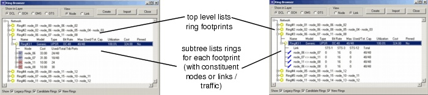

Ring Design > Ring Browser
Ring Browser
You can see the links created by all the rings—in addition to the potential DCL mesh links—in the DCL layer view of the Project Editor. Because it might not be clear which links contribute to which ring, you can view links on a per-ring basis in the Ring Browser (Network > Ring Browser), shown in Figure 12-6-Ring Browser (Node and Link Views) .
The Ring Browser lists each ring in the network along with a list of nodes that constitute the ring's path (also called the ring's footprint). One ring footprint can support multiple rings with different types and bit rates. When you select a ring in the browser, the ring's footprint is highlighted in the Project Editor workspace.
Figure 12-6 Ring Browser (Node and Link Views)

For more information about this window, see Ring Browser.
| Home © 1987-2007 OPNET Technologies, Inc. All Rights Reserved. This software may be covered by one or more U.S. Patents. See complete patent notice in the Legal Notices section. OPNET Support Center |